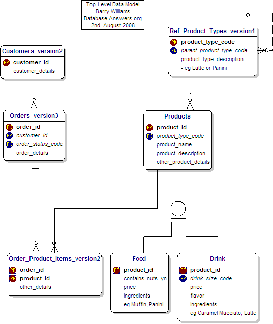

| |
 |
 |
| |
|
|
INTRODUCTION :
This Tutorial is a Beginner's Guide to Data Modelling.
With the help of Google's free translation service, I have produced versions of this Tutorial in
Portuguese
and Spanish.
Topics covered in this Tutorial include :-
- Creating Entities
- Primary Keys
- Foreign Keys
- 1-to-Many Relationships
- Hierarchies
- Inheritance
- Reference Data
I have used the Dezign Data Modelling Tool to create the Data Models in this Tutorial.
I chose Datanamic because it is powerful, flexible and affordable.
Members of the Database Answers Community can purchase Dezign and benefit from a discount of 25%.
In order to gain the benefit of this discount, all you have to do is
send me an email with your Database Answers Community ID.
I will then send you the order instructions.
At the end of this Tutorial, we will have produced a Data Model, which is commonly referred as an Entity-Relationship Diagram, or 'ERD'
I hope you find this Tutorial interesting and helpful.
Please
email me and let me know.
|
GETTING STARTED :
The area I have chosen for this Tutorial is a Data Model for a simple Order Processing System for Starbucks.
I have done it this way because many people are familiar with Starbucks and it provides an application that is easy to relate to.
We think about the area we are going to Model.
We can see Customers ordering Products,(Food and Drinkg and so on).
My Approach has three Steps :-
- Establish the Scope of the Data Model
- Identify the 'Things of Interest' that are within the Scope,
These will be called Entities.
- Determine the Relationships between them.
DECIDING THE SCOPE OF OUR DATA MODEL
When we step inside, we see that Starbucks sells a wide range of Products, so our first task is to decide which of them should be included in our Data Model.
Right now, we are interested only in something to eat and something to drink.
Therefore, all the mugs and other items shown in this picture on the left, are outside the Scope of our Data Model, and are not 'Things of Interest'.
|
|
|
1) CREATING ENTITIES
1) Creating an Entity in Dezign
1. Right-click on a blank area in the diagram
2. From the drop-down list, choose Insert and Entity
3. Check the 'PK' box for the Primary Key attribute, which will usually be the first one on the Entity.
4. Click on Close to save the results.
|
2) PRIMARY KEYS :
- At this Stage, we show only the Entities with no Relationships and minimum Attributes.
and specify only the Primary Key and one 'details' field that will be replaced later on..
- The Primary Key field(s) should always be first.
- You will notice that the first field in the Customers_version2 Table is the Customer_id.
- It has a 'PK' symbol beside it, which indicates that it is the Primary Key for the Table.
- The Primary Key is very important and is the way that we can recognise each individual record in the Table.
Creating a Primary Key in Dezign
1. Right-click on the Entity
2. Choose Attributes
3. Check the 'PK' box for the Primary Key attribute, which will usually be the first one on the Entity.
4. Click on Close to save the results.
|
|
|
3) FOREIGN KEYS :
Here we have added the Relationships between the Entities.
- When this Primary Key is used in another Table, it is referred to as a'Foreign Key'.
- We can see a good example in this diagram, where the customer_id appears in the Orders_version3 Table as a Foreign Key and is a
Primary Key (PK) in the Customers_version2 table.
- This is shown with an 'FK' symbol beside it
Mandatory Key Fields
- A Foreign Key is usually mandatory, in other words, a value for a customer_id in the Orders_version3 Table
must correspond to an actual value of the customer_id in the Customers_Version2 Table.
- This is shown in the diagram by the short straight line at the end of the dotted line close to the Customers Table.
Cash Customers
- Of course, if a Customer pays by cash, then we usually don't have any details about them.
- But a Primary Key cannot be NULL (or blank) therefore the Customer_id field must have a matching value in the Customer table
for a Cash Customer just like any other kind of Customer.
- In order to achieve this we would create a record for a Cash Customer with a customer_id value of something like 0 or -1.
- Then we would set this up as a default so that if a Payment Method is not specified manually for a particular Customer,
then the system defaults to 0 for the Cash Customer.
Foreign Keys in Dezign
1. Foreign Keys are created automatically when you make a Relationship between two Entities.
2. I recommend that you move the field up in the Entity so that it takes it place alphabetically among the Key fields.
To do this, right-click on the Entity choose the Attributes option, then click on the up or down arrow on the right-hand side.
Note that the PF symbol stands for 'A Primary Key which is also a Foreign Key', meaning it is a Primary Key
in another table. You can see that the order_id and the product_id fields are both Primary Keys in other tables.
I like this structure because logically it can be described as 'The Order Product Items can be defined by the combinations
The order_details would usually include the 'Quantity' of each Product in the Order.
Of course, this structure can easily be avoided (and sometime it shoukld be avoided because it leads to too many fields in a composite key)
by using a surrogate key, which is number generated automatically and does not have any innate meaning.
|
4) ONE-TO-MANY RELATIONSHIPS :
One-to-Many Relationships
- If a Customer goes into Starbucks on many ocasions then there will be many records in Orders_version3 for a specific Customer.
- In other words, we would say that the Relationship is usually One at the Customers end and Many at the Orders_version3 end.
- This is shown by the symbol that has three small lines at that end of the Relationship dotted line, which is commonly referred to as Crow's Feet.
Optional Key Fields
- Not every Customer will place an Order.
In general of course they will, but we need to allow for situations where Customers change their minds and leave without buying anything.
- In other words, we would say that the Relationship can be optional at the Orders_version3 end.
- This is shown by the little 'O' at that end of the Relationship dotted line between Orders_version3 and Customers_version2.
- In large commercial organisations, this can lead to lengthy discussion about 'What exactly is a Customer ?'.
Is it, for example, an individual or organisarion who simply makes contact to ask a questios,
or is it somebody who makes a purchase ?'
And what if they return their purchases - maybe they are Customers but not the kind of Customers that we want ?'
And so on ...
|
|
|
5) HIERARCHIES :
At this Stage, we add Reference Data.
This diagram shows how the hierarchies of Products and Product Types that we have just discussed are shown in our Entity-Relationship Diagram.
Rabbits Ears
You will notice that the table called 'Product_Types_v1' has a dotted line coming out on the right-hand side and going back in again on the top-right corner.
Data Analysts call this a Reflexive Relationship, or informally, simply 'Rabbits Ears'.
In plain English, we would say that the Table is joined to itself and it means that a record in this Table can be related to another record in the Table.
This approach is how we handle the situation where each Product can be in a hierarchy and related to another Product.
For example, a Product called Panini could be in a Product Sub-Category called 'Miscelleneous Sandwiches' which could be a higher Product Category called 'Cold Food', which itself could be in a higher Product Super-Category called simply 'Food'.
Next time you go into Starbucks, take a look at the board behind the counter and try to decide how you would design the Products area of the Data Model.
You should pay special attention to the little 'zeros' at each end of the dotted line.
These are how we implement the fact that the 'Parent Product Type Code' is optional, because the highest level will not have a Parent.
|
6) INHERITANCE :
Food and Drink are specific examples of the more general Thing called a Product.
They inherit some common attributes from the Product, and also have some of their own.
For example, Food can contain Nuts but Drink do not contain nuts, but both have a Product Name.
The unusual symbol in the middle of the diagram, composed of a circle with two small lines underneath it is how Inheritance is shown using the particular Data Modelling Tool that I am using,which is called Dezign.
Inheritance is a very important topic when you are creating a Data Model.
In plain English, we would say that Inheritance occurs where a Parent-Child relationship exists between Things of Interest (or Entities).
You can ask the simple 'Is-a' question - in this case, if we ask 'Is a Book a Product' then clearly the answer is 'Yes' so we think there is an Inheritance relationship between them.
In the example of Inheritance shown in this diagram, we can see that all Products have Names and Descriptions. Therefore, Books, Food and Drink will inherit these characteristics from the parent Product.
However, each type of Product will have specific characteristics that it does not share with other types of Products. For example, Books have ISBNs and Authors, but Food and Drink do not.
One of the important things in your Data Model is to be sure you have identified all the Inheritance relationships.
However, from many years of experince as a DBA, I should point out that relationship is often blurred in a real physical Database because it can be clumsy to implement.
I sometimes find myself showing Inheritance in a Logical Data Model which then disappears when I design the Physical Database, which is what ultimately becomes the Database.
There are three different approaches to implementing Inheritance in a Database :-
- Implement the design as you see it , in other words, in this case, we would have a separate physical Table for the Products, Food and Drink Entities.
- Copy all attributes from Food and Drink up to the Products Table (which we call a Super-Type for the Food and Drink Sub-Types) so you end up with just one Table.
This is appealing because it seems a natural approach and it is easier for developers to work with.
It results in one large Table, where two-thirds of all Attributes are not populated in every record.
This is some wasted space in the physical table at run time, but these days (February, 2013) space is very cheap.
- Copy all attributes from Products down to the Food and Drink (Sub-Types) tables so you have two Tables in the Database.
|
|
7) REFERENCE DATA :
- This diagram shows Address Types, which are an example of Reference Data.
- This kind of data has the following characteristics :-
- it doesn't change very much
- it has a relatively small number of values, usually less than a few dozen and never more than a few hundred.
- Therefore we can show it with a Code as a Primary Key.
- Data in Reference Data Tables can be used to populate drop-down lists for Users to select from.
- In this way, it is used to ensure that all new data is valid.
- Standards
- In the Address Table, you will see a field called 'iso_country_codes'.
- iso stands for the 'International Standards Organisation'.
- Where possible, it's always good to use national or international standards.
Customer Addresses
- This is a general and flexible approach to handling Addresses in our Data Model.
- We have a separate Address Table, which allows us to have more than one Address for any Customer very easily.
- This design also has some other benefits :-
- We can accomodate more than one person at the same Address.
We need to do this because different members of a family may sign-up separately with Amazon.
- With a separate table of Addresses, we can easily use commercial software to validate our Addresses.
To find this kind of software, simply Google for "Address Validation Software".
I have used QAS with great success in the past.
With this approach, we can always be sure that we have 100% good Address data in our Database.
|
|

|
8) TOPICS IN THIS TUTORIAL :
During this short Tutorial,we have covered the following Topics :-
- Creating Entities
- Primary Keys
- Foreign Keys
- 1-to-Many Relationships
- Hierarchies
- Inheritance
- Reference Data
If you would like to see other Topics included, please let me know. Tutorial.
|
9) PLEASE EMAIL ME
I hope you have found this Tutorial interesting and useful.
Please
email me with your questions or suggestions so I can improve this first draft Tutorial.
If you want to try the Dezign Data Modelling Tool, you can download it from the Datanamic Web Site.
Good luck with creating your first Data Model !
Barry Williams
Principal Consultant
Database Answers Ltd.
London, England
|
|
|
|
© DatabaseAnswers.org 2012,2008
|